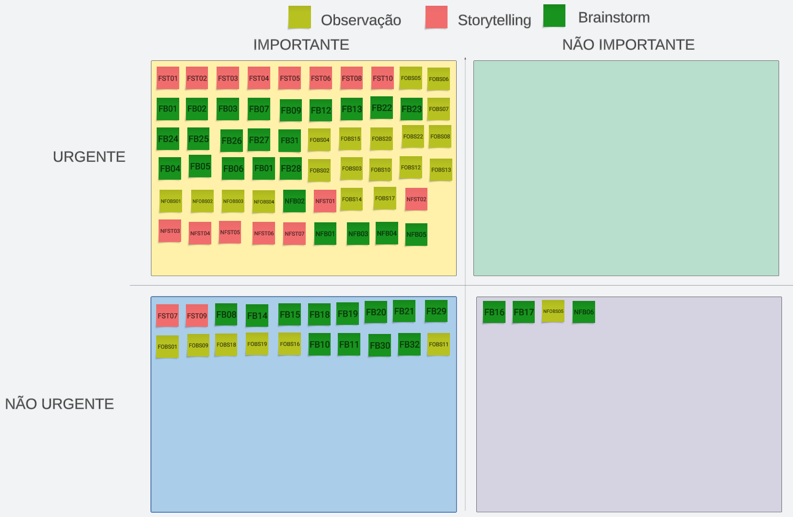

Three Level-Scale
Introdução
A Three-Level Scale é uma técnica de priorização que divide os requisitos em três categorias: alta, média e baixa. Essas categorias se baseiam na importância e na urgência de cada requisito para o produto, mas não são precisas e podem mudar conforme o contexto. Por isso, é importante que os desenvolvedores e os stakeholders definam os critérios de priorização antes de usar essa técnica.
Uma forma de estimar a prioridade dos requisitos é usar uma matriz de quatro quadrantes, que considera a importância e a urgência de cada um. Os requisitos podem ser classificados como:
- Importantes e urgentes: são os de alta prioridade, que devem ser feitos no próximo lançamento;
- Importantes mas não urgentes: são os de média prioridade, que podem ser feitos em um lançamento futuro;
- Não importantes e não urgentes: são os de baixa prioridade, que não trazem muito valor ao produto e podem ser eliminados ou revisados.
Metodologia
Será utilizado o aplicativo Lucidchart para a criação da matriz de priorização, onde será divido em 4 quadrantes, como mostrado na figura 1, sendo eles:
- Importantes e urgentes: são os de alta prioridade, que devem ser feitos no próximo lançamento;
- Importantes mas não urgentes: são os de média prioridade, que podem ser feitos em um lançamento futuro;
- Não importantes e não urgentes: são os de baixa prioridade, que não trazem muito valor ao produto e podem ser eliminados ou revisados.
- Não importantes mas urgentes: são os de baixa prioridade, que não trazem muito valor ao produto e podem ser eliminados ou revisados.
Figura 1: Matriz montada no aplicativo LucidChart (Fonte: Autores, 2023).
Para a aplicação do three-level scale, será utilizada a ténica de interpretação, encontrada na tabela 1, onde os participantes irão interpretar alguma das personas criadas anteriormente, e assim, irão definir quais são os requisitos mais importantes e urgentes para a persona interpretada.
| Participante | Papel interpretado |
|---|---|
| Lucas | Intermediador |
| Henrique | Paulo (Persona) |
| Gabriel | Sebastião (Persona) |
Tabela 1: Participante da encenação e sua respectiva persona (Fonte: Autores, 2023).
Resultados
No fim do Three Level-Scale, obtimos o seguinte resultado encontrado na figura 2, vale ressaltar que por mais que alguns requisitos, na gravação foram colocadas como não importante e não urgente, na finalização, foram movidos estes requisitos para o terceiro quadrante, você consegue acessar esse arquivo em: LucidChart
Entrevista com o usuário
Conforme indicado na Tabela 1, os membros do projeto realizaram a análise das necessidades dos usuários, o que permitiu definir a seguinte ordem de prioridade, conforme descrito no Vídeo 1:

Figura 2 - Resultados do Three Level-Scale
Alta prioridade
A partir da priorização Three Level-Scale, foi obtido como requisitos de alta prioridade os seguintes requisitos descritos na Tabela 2.
| ID | requisito |
|---|---|
| FST01 | o aplicativo deve permitir que os usuários se registrem fornecendo informações básicas, como nome, sobrenome, endereço de e-mail e senha. |
| FST02 | o aplicativo deve permitir que os usuários pesquisem acomodações com base em critérios específicos, como localização, datas de check-in e check-out, tipo de quarto e preço. |
| FST03 | o aplicativo deve permitir que os usuários reservem acomodações selecionadas, inserindo as informações de pagamento e confirmando a reserva. |
| FST04 | o aplicativo deve permitir que os usuários cancelem suas reservas de acomodação, desde que sejam feitas dentro dos termos e condições estabelecidos pela empresa. |
| FST05 | o aplicativo deve permitir que os usuários pesquisem voos com base em critérios específicos, como origem, destino, datas e número de passageiros. |
| FST06 | o aplicativo deve permitir que os usuários reservem voos selecionados, inserindo as informações de pagamento e confirmando a reserva. |
| FST08 | o aplicativo deve permitir que os usuários gerenciem suas reservas existentes, incluindo a visualização de detalhes da reserva, alterações de datas e cancelamentos. |
| FST10 | o aplicativo deve permitir que os usuários visualizem seu histórico de reservas anteriores, incluindo informações como datas, acomodações e voos reservados. |
| NFST01 | o aplicativo deve ser fácil de usar, com interface intuitiva e navegação clara. |
| NFST02 | o aplicativo deve ser rápido e responsivo, com tempo de carregamento mínimo e tempos de resposta rápidos. |
| NFST03 | o aplicativo deve estar disponível para uso em todos os momentos, com tempos de inatividade mínimos. |
| NFST04 | o aplicativo deve ser seguro, protegendo as informações dos usuários e garantindo a privacidade. |
| NFST05 | o aplicativo deve ser confiável, com alta disponibilidade e poucas falhas. |
| NFST06 | o aplicativo deve ser compatível com uma ampla variedade de dispositivos, navegadores e sistemas operacionais. |
| NFST07 | o aplicativo deve estar disponível em diferentes idiomas e adaptar-se a diferentes regiões e culturas. |
| FB01 | O sistema deve permitir que o usuário possa cadastrar uma conta |
| FB02 | O sistema deve possuir escolha do método de pagamento |
| FB03 | Possibilitar o cadastro de reserva(s) pelo usuário |
| FB07 | Permitir que um grupo de pessoas reservem um local |
| FB09 | Sincronizar as datas das reservas com o calendário do usuário |
| FB12 | Permitir visualização de imagens do local pelo usuário |
| FB13 | Permitir visualização de imagens do carro pelo usuário |
| FB22 | O sistema deve ser capaz de localizar o usuário se permitido |
| FB23 | O sistema deve sugerir hospedagens de acordo com a localização do usuário |
| FB24 | O sistema deve oferecer uma aba de perguntas |
| FB25 | O sistema deve conter um bate-papo para contato com o locatário ou empresa em que foi feito a reserva |
| FB26 | O sistema deve ter um sistema de pontuação ligada ao usuário |
| FB27 | O usuário deve poder denunciar contas |
| FB31 | Deve existir uma pesquisa por comando de voz |
| FB04 | Permitir o cancelamento de reserva pelo usuário |
| FB05 | Permitir que o usuário acesse o histórico de suas reservas |
| FB06 | Permitir a pesquisa de reserva pelo usuário |
| FB28 | O usuário deve poder avaliar e comentar reservas |
| FOBS01 | Deve ser possível criar uma conta com o google, facebook ou email pessoal. |
| FOBS02 | Deve ser possível realizar pesquisas. |
| FOBS03 | Deve possuir um sistema de fidelidade. |
| FOBS04 | Deve possuir um sistema de informações e recomendações. |
| FOBS05 | Deve ser possível filtrar as pesquisas. |
| FOBS06 | Deve ser possível agendar hospedagem. |
| FOBS07 | Deve ser possível agendar voos. |
| FOBS08 | Deve ser possível alugar carros. |
| FOBS10 | O aplicativo deve ter mapa interativo. |
| FOBS12 | O aplicativo deve ter uma aba de favoritos. |
| FOBS13 | O aplicativo deve possuir um histórico de reservas. |
| FOBS14 | O aplicativo deve possuir uma central de ajuda ao usuário. |
| FOBS15 | O aplicativo deve possuir uma área administrativa da conta. |
| FOBS20 | O aplicativo deve apresentar as informações legais sobre o uso para o usuário. |
| FOBS22 | O aplicativo deve permitir que o usuário saia da conta. |
| NFOBS01 | A inteface deve ser responsiva. |
| NFOBS02 | O sistema deve rodar nas principais plataformas mobile Android e iOS. |
| NFOBS03 | O sistema deve ser seguro. |
| NFOBS04 | Deve possuir acessibilidade. |
| NFB01 | O sistema deve ser seguro |
| NFB02 | O sistema deve ter um suporte que funciona 24 horas |
| NFB03 | O sistema deve garantir a privacidade e segurança dos clientes |
| NFB04 | O sistema deve ter acessibilidade para pessoas cegas |
| NFB05 | O sistema deve ser multiplataforma: Android e iOS |
Tabela 2: Requisitos de alta prioridade. (Fonte: Autores, 2023).
Requisitos de Média Prioridade
A partir da priorização Three Level-Scale, foi obtido como requisitos de média prioridade os seguintes requisitos descritos na Tabela 3.
| ID | Requisitos |
|---|---|
| FST07 | o aplicativo deve permitir que os usuários pesquisem e reservem carros de aluguel com base em critérios específicos, como localização, datas e tipo de veículo. |
| FST09 | o aplicativo deve permitir que os usuários avaliem acomodações após a conclusão da estadia, fornecendo uma classificação e feedback por escrito. |
| FB08 | Enviar email sobre o status da reserva |
| FB10 | O sistema deve possuir uma lista de favoritos para aluguel de carro, hospedagem e voos |
| FB11 | O sistema deve possuir uma lista de desejos para aluguel de carro, hospedagem e voos |
| FB14 | O sistema deve possuir um mapa interativo |
| FB15 | O sistema deve possuir uma carteira digital |
| FB18 | O sistema deve possuir uma moeda própria |
| FB19 | O usuário deve poder comprar moedas do sistema |
| FB20 | O sistema deve oferecer uma opção de conta premium |
| FB21 | O usuário deve poder selecionar o idioma do sistema |
| FB29 | O sistema deve notificar sobre ofertas |
| FB30 | O sistema deve ter filtragem de pesquisa de hospedagens, alugueis de carros e voos |
| FB32 | O usuário deve poder adicionar itens ao aluguel do carro |
| FOBS01 | Deve ser possível criar uma conta com o google, facebook ou email pessoal. |
| FOBS09 | Deve ser possível contratar serviços de táxi. |
| FOBS11 | Deve ser possível agendar visitas à atrações turísticas. |
| FOBS16 | O aplicativo deve possuir sistema de carteira virtual. |
| FOBS18 | O aplicativo deve possuir um sistema de ofertas. |
| FOBS19 | O aplicativo deve possuir um sistema de configurações do aplicativo. |
Tabela 3 - Tabela de Requisitos de média prioridade. (Fonte: Autores. 2023).
Requisitos de Baixa Prioridade
A partir da priorização Three Level-Scale, foi obtido como requisitos de baixa prioridade os seguintes requisitos descritos na Tabela 4.
| ID | Requisitos |
|---|---|
| FB16 | O sistema deve exibir dicas sobre os locais e carros |
| FB17 | O sistema deve mostrar notícias relacionadas ao turismo |
| NFB06 | O sistema deve ter escalabilidade |
| NFOBS05 | Deve ser escalável. |
Tabela 4 - Tabela de Requisitos de média prioridade. (Fonte: Autores. 2023).
A seguir, na tabela 5, estão listadas todas as siglas com seus respectivos significados.
| Sigla | Significado |
|---|---|
| FST | Requisito funcional de Storytelling |
| NFST | Requisito NÃO funcional de Storytelling |
| FB | Requisito Funcional Brainstorm |
| NFB | Requisito Não Funcional Brainstorm |
| FOBS | Requisito funcional da Observação |
| NFOBS | Requisito não funcional da Observação |
Tabela 5: Tabela de siglas com seus respectivos significados. (Fonte: Autores, 2023).
Bibliografias
SOUZA, D. 5 técnicas de priorização: Organize seu backlog. #EmpiricusTech, 2021. Disponível em: https://medium.com/empiricustech/5-t%C3%A9cnicas-de-prioriza%C3%A7%C3%A3o-organize-seu-backlog-e636d97222e4. Acesso em: 23 abr. 2023.
ROCK CONTENT. Priorização de Projetos: conheça os 6 melhores métodos. Rock Content, 2018. Disponível em: https://rockcontent.com/br/blog/priorizacao-de-projetos/. Acesso em: 23 abr. 2023.
Projeto Grasshopper do github de requisitos de software - disponível aqui, Acessado em: 24 de abril de 2023.
Histórico de Versão
| Versão | Data | Descrição | Autor(es) | Revisor(es) |
|---|---|---|---|---|
| 1.0 | 23/04/2023 | Criação do documento | Henrique e Lucas | Pedro |
| 1.1 | 24/04/2023 | Resultados do Three Level-Scale | Henrique e Lucas | Pedro |